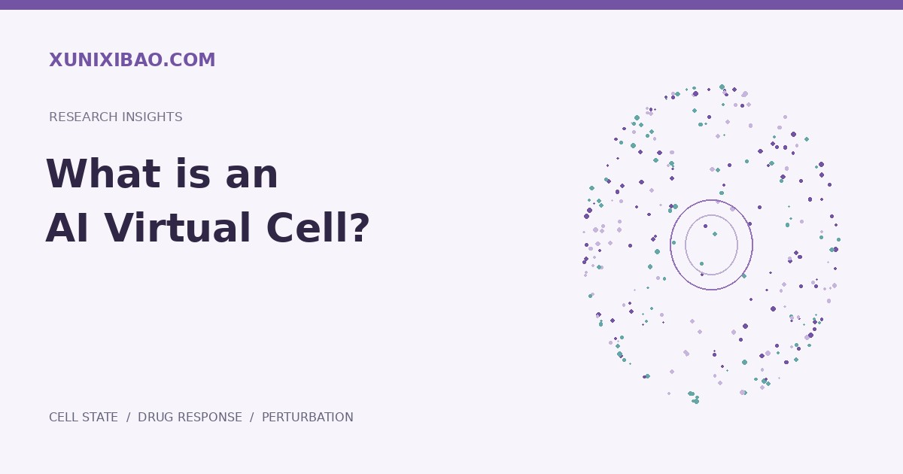

Key takeaway
AI virtual cells use data and models to represent cellular states and study changes under specified interventions. Models usually cover selected cell types and readouts, rather than replicating living cells in full.
A virtual cell is a research approach
AI virtual cells use data and models to describe cellular features and investigate responses under specified conditions. Virtual does not imply a complete digital replica of a living cell. Research generally focuses on measurable layers such as transcriptomes, morphology or selected phenotypes.
From representation to response prediction
Cell representations compress high-dimensional observations into comparable states. Response prediction adds drug, genetic or environmental interventions to study subsequent expression and phenotypes. A model that identifies cell types does not necessarily predict unseen perturbations reliably.
Why context matters
The same intervention can produce different responses depending on cell origin, genetic background, culture conditions and observation time. Research design therefore needs appropriate controls, complete context and coverage of the target setting, as well as sufficient data.
Building useful research conclusions
A practical objective is to narrow candidate mechanisms or conditions to a testable set. Independent data, suitable baselines and experimental readouts can establish whether predictions add information beyond simple statistical patterns.
References
Arc's virtual cell initiative studies cellular changes under perturbations; CellVoyant illustrates an imaging-based approach to cell state analysis. Different modalities serve different tasks and should not be treated as interchangeable capabilities.
Further reading
Arc Institute · Virtual Cell Initiative ↗
Tahoe · Data and research approach ↗
View all references
Sources and evidence
Cell representation and perturbation prediction are distinct tasks; the model page links to papers, code and weights. Arc Institute · State ↗
Label-free live-cell image analysis for counting, morphology and selected state readouts. CellVoyant · FateView ↗